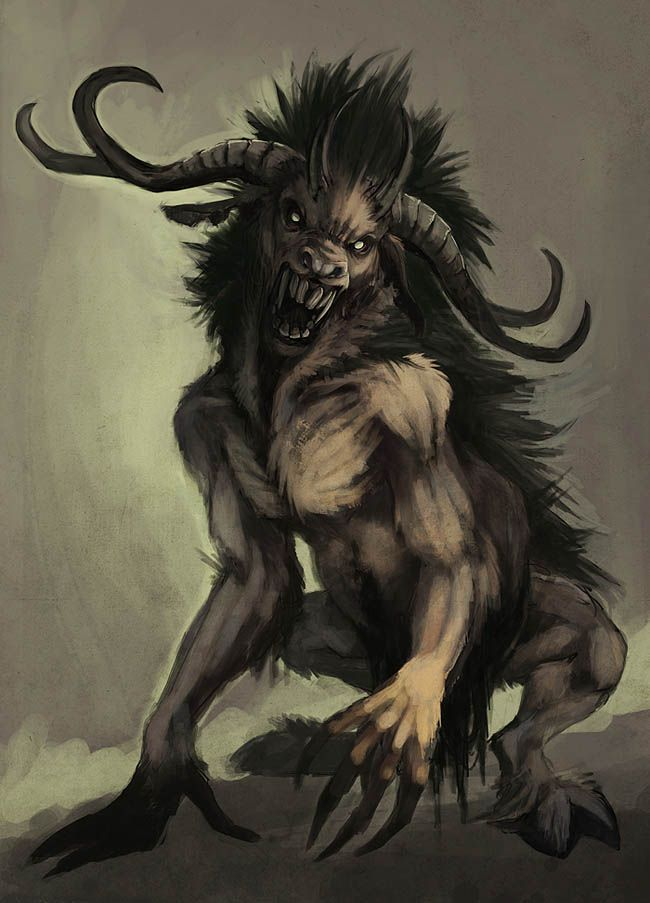

Początek świata
Na początku było tylko bezkresne morze i światło. Nad tą otchłanią pod postacią łabędzia krążył Świętowit. Dokuczała mu samotność, dlatego kiedy zobaczył na wodzie swój cień, postanowił oddzielić go od siebie. Tak narodzili się Perun, który zamieszkał
świat ponad taflą morza, oraz Weles nurkujący w wielkim oceanie. Jednakże im także znudził się ten pusty świat. Wtedy to Weles postanowił wyłowić z dna morza garść piachu. Dopiero za trzecim razem, gdy poprawnie wypowiedział zaklęcie ”z
mocą Peruna i moją”, udało mu się wyciągnąć piach nad powierzchnię wody, poprzednio ukrywszy odrobinę dla siebie w ustach. Perun rzucił piasek na powierzchnię wody, a ten zaczął rosnąć. Weles wtedy zakrztusił się powiększającym w ustach
piachem i wypluł go. Tak powstały góry. Stworzony ląd był niewielki, dlatego Weles ponownie postanowił nie dzielić się z bratem ziemią i zabrać wszystko dla siebie. Gdy zmęczony Perun zasnął, Weles postanowił zepchnąć brata do morza. Wziął
go delikatnie na ręce, a gdy tylko zaczął zbliżać się do brzegu, ziemia zaczęła się rozrastać w zastraszającym tempie. Obudzony tym Perun przestraszył się, że braknie dla niego nieba, więc posłał pszczołę, która miała zbadać tę sprawę.
Ta poleciała podsłuchać rozmowę Welesa ze stworzonym przez niego kozłem. Przekazała ona usłyszaną wiadomość, że aby ląd przestał się rozrastać, trzeba wyznaczyć kierunki świata. Perun ukręcił z fal morskich kij i nim wyznaczył cztery kierunki
świata. W ten sposób powstał ląd, który znamy. Bracia kłócili się o to, kto ma panować nad światem. Wtedy ponownie pojawił się Świętowit i podzielił między nimi sprawiedliwie świat. Perun dostał we władanie niebo i ziemię, a Weles panował
nad Nawią.
